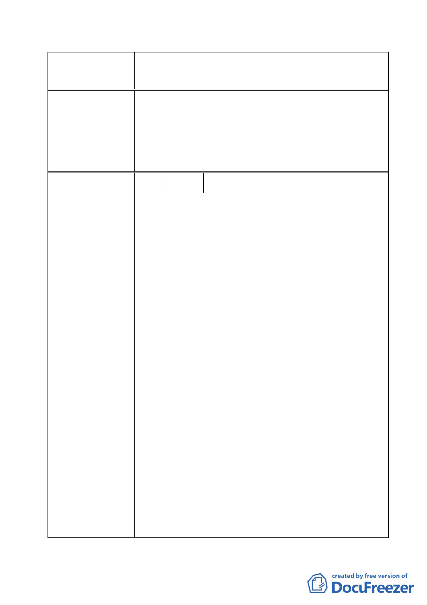

案名
變更臺北市經國七海文化園區暨週邊地區主要計
畫案
市府回覆意見
委員會決議
編號
陳情理由
1. 關於臺北市中山區四小段 231-1 地號管理機關漏列財
政部國有財產局 1 節，已於土地權屬、實施進度與經
費等節敘明，惟仍應依土地登記謄本為準。
2. 公有土地撥用 1 節將由本府文化局循相關法令程序辦
理。
依市府回應意見辦理。
2 陳情人 國防部軍備局工程營產中心
國防部軍備局工程營產中心 101 年 10 月 12 日備工土管字
第 1010015338 號函表示意見，涉計畫方案主要內容(略
以)：
1.鄰近營區地段不同意設置旅館住宿業或大型餐飲娛樂
設施，以免增加營區安全管理複雜性。
2.七海文化園區位於高密度軍事重要設施區域，其機敏性
高，未來園區開發後，一般遊客及陸客人員進出頻繁，
恐對此區域整體軍事安全有一定程度影響，建請確依臺
北市都市計畫書第五項變更內容第三條都市設計原則
第三款律定：新建建築物高度以不超過 15 公尺 3 層樓
為原則，以確保國防軍事安全。
3.經查案內計畫書僅說明未來園區新建建築物高度以不
超過 15 公尺及 3 層樓為原則，並未見園區內相關建築
物初步規劃圖說，有關面向營區之牆面窗口尺寸、數量
等是否影響營區軍機防護作業，建議全案進入初步設計
階段時依業管權責再行評估為宜。
4.要求依原協議將北安段四小段 207 地號等 12 筆計畫道
路用地變更為行政區，以確保營區完整。
5.園區範圍內海軍交界處之圍牆，以樹籬或綠色植物等方
式實體隔離(例如在樹籬間以鏤空格柵作為隔離)。
6.七海潭具有疏洪、蓄水及調節四海潭水位之重要功能，
應適予疏濬並維持，以保障營區安全。
7.第一、二區限建範圍前已於 89 年奉核解管，並配合國
防部 91 年公告「大直要塞管制區域圖」管制基線內為
禁建範圍，故案內土地已非屬公告列管範圍。
8.案內原公展範圍內屬行政區之土地，為符管用合一及後
續提供附屬行政服務之空間使用，仍請規劃為行政區使
用。
- 16 -